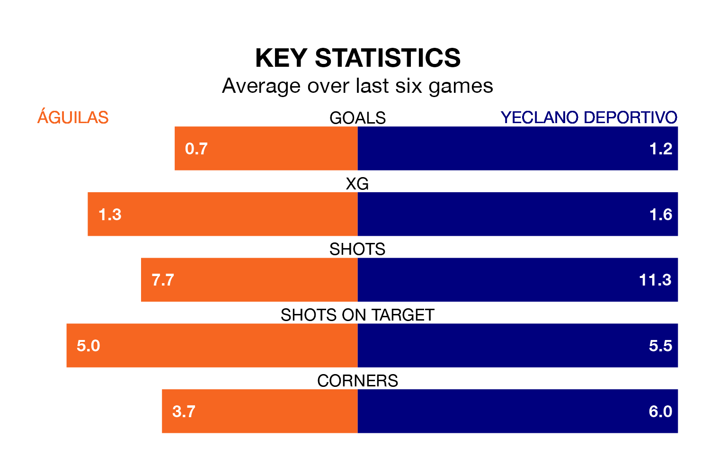

Yeclano Deportivo face a challenge to maintain their high-scoring form away against a tight Águilas defence on Sunday.
With 44 goals in 32 games, Yeclano Deportivo are the second-highest scorers in the Segunda División RFEF Group 4 ahead of the 11am kick-off.
They face a Águilas side who have scored 23 in 32 matches, but conceded only 16 goals, putting them top of the league's tightest defences.
Yeclano Deportivo are second in the table after 32 games, of which they have won 17 and drawn eight, earning 59 points.
Águilas are five places behind the visitors in seventh, with 11 wins and 13 draws putting them on 46 points.
The home team are in disappointing form in the Segunda División RFEF Group 4, with one win and two draws from their last six games.
With three wins and three losses over that period, Yeclano Deportivo's form is better – they have taken nine points from 18, compared to Águilas's five.
Águilas's last match was on April 21, a 0-0 draw against Real Betis B.
Yeclano Deportivo beat Marbella 1-0 last time out, also on Sunday, with Juan Jesús Rodriguez Rodriguez on the scoresheet.
Updated: 07:59 (UTC), 26/04/24